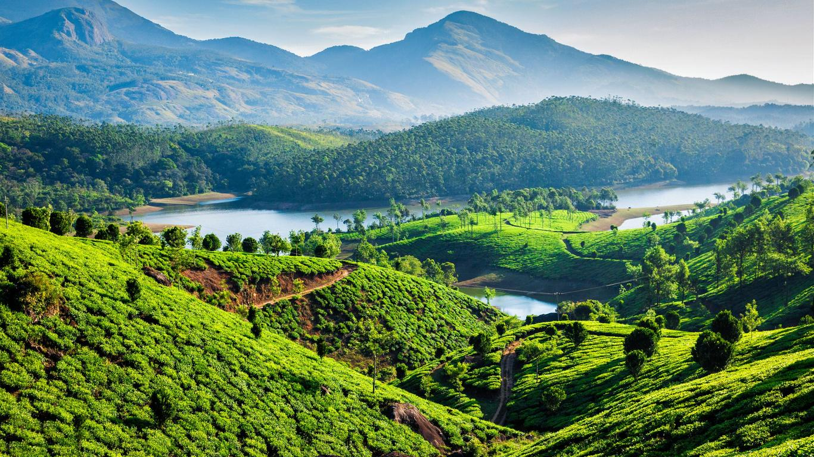
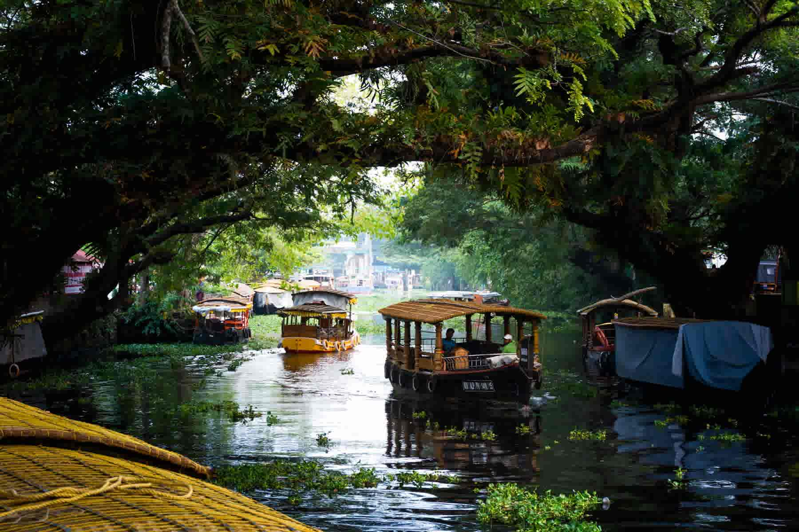
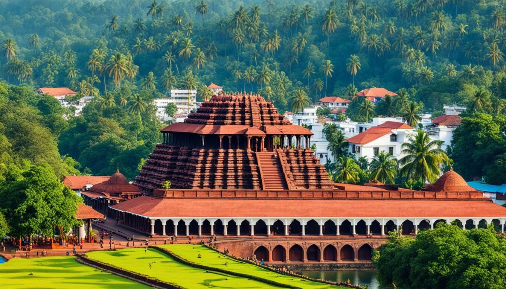
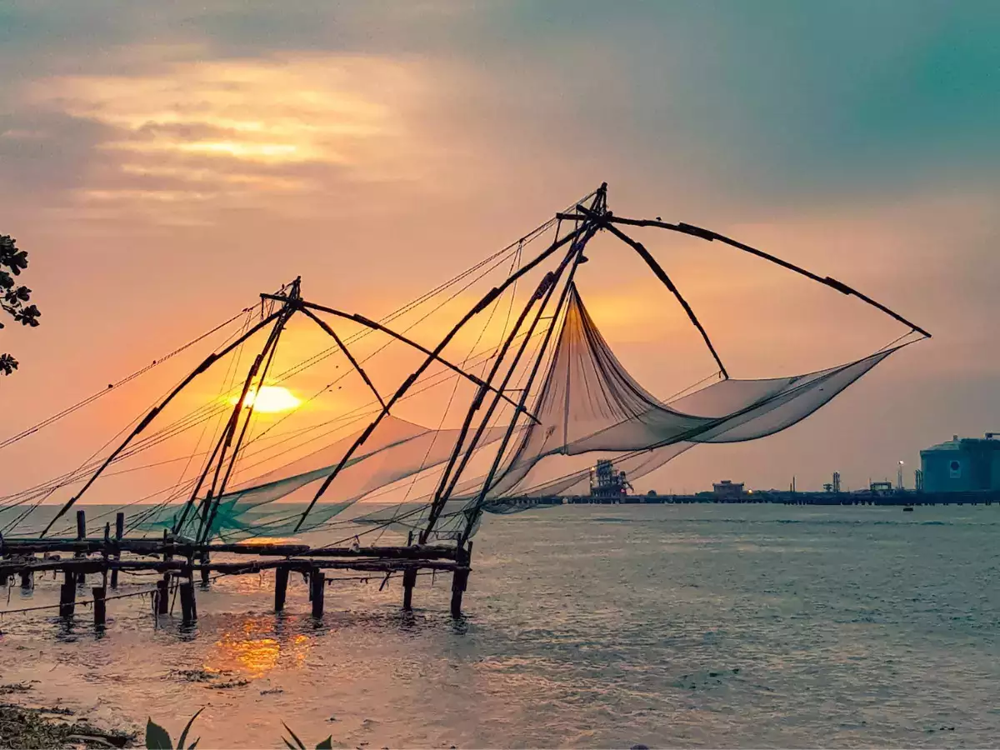
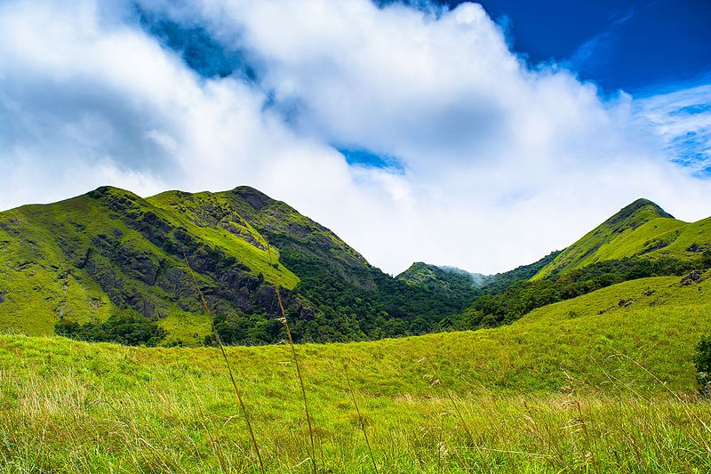
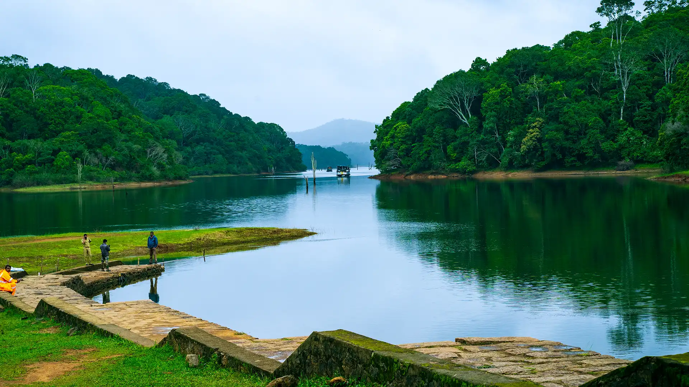
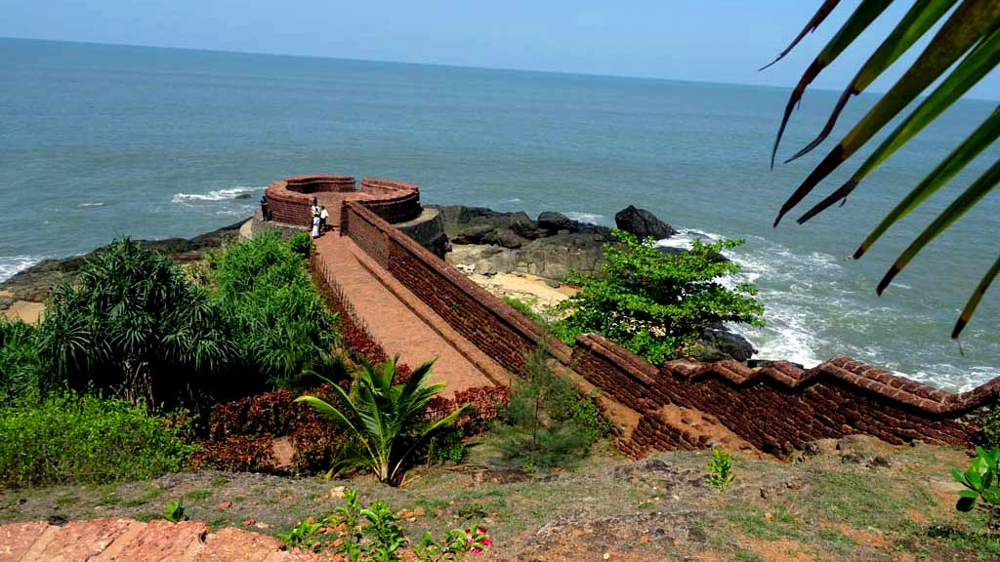

Munnar
Endless tea estates, Eravikulam National Park and Top Station views.

Kerala is a slow, green, restorative holiday — tea-carpeted hills, palm-lined backwaters, spice plantations, Ayurvedic retreats and Arabian Sea beache…
Kerala is a slow, green, restorative holiday — tea-carpeted hills, palm-lined backwaters, spice plantations, Ayurvedic retreats and Arabian Sea beaches. Our Kerala circuits pair perfectly with a Chikkamagaluru or Coorg extension.
Endless tea estates, Eravikulam National Park and Top Station views.
Houseboat cruises through the Vembanad backwaters and paddy-field villages.
Periyar Tiger Reserve, spice plantations and bamboo rafting.
Edakkal Caves, Chembra Peak heart lake and Banasura Sagar Dam.
Quiet meadows, pine forest and paragliding above rolling hills.
Dramatic red cliffs above a clean beach with cafés and sunset views.
Fort Kochi's Chinese fishing nets, colonial streets and Kathakali evenings.
Lighthouse Beach, calm swimming coves and Ayurvedic resorts.
The Niagara of India, thundering through rainforest near Thrissur.
Bird sanctuary and luxurious lakeside stays on Vembanad Lake.
September to March is ideal across Kerala. Munnar and Wayanad are lovely almost year round, while the monsoon months of June to August are the traditional season for Ayurvedic treatments.






Planning questions answered by our travel desk.
Tell us your travel dates and group size. We will send a day-by-day plan with pricing on WhatsApp.
Call us for same-day availability, customised itineraries and honest pricing. No hidden charges, ever.